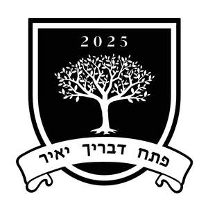
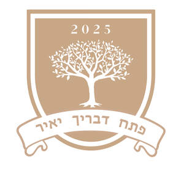

Trade Mark Journal No.2025/049 5 December 2025
UK00004302231 27 November 2025 (16,25,41)
Mark 1

Mark 2

- Class 16
- Printed teaching materials; Printed educational materials; Teaching materials; Instructional and teaching material; Writing materials; Bookbinding materials; Printed promotional material; Drawing materials; Binding materials for books and papers; Printed books; Printed booklets; Printed publications; Printed matter for instructional purposes; Printed brochures; Printed photographs; Printed diplomas; Drawings; Photographs; Paper bags; Carrier bags; Paper shopping bags; Pens; Pen and pencil cases; Pen holders; Writing paper pads; Pencils; Printed music; Printed sheet music; Printed pamphlets; Printed stationery; Printed flyers; Printed leaflets; Printed invitations; Printed cards; Printed periodicals; Printed calendars; Printed advertisements; Printed paper labels; Printed tickets; Printed newsletters; Printed forms; Printed paper signs; Printed reports; Printed certificates; Printed lectures; Printed timetables; Printed curricula; Printed programmes; Adhesive printed labels; Printed matter; Printed awards; Printed training materials; Stationery; Paper stationery.
- Class 25
- Clothing; Headgear.
- Class 41
- Educational research; Educational seminars; Educational services; Educational and teaching services; Religious educational services; Development of educational materials; Educational testing; Educational and training services; Organisation of educational seminars; Accreditation of educational services; Educational examination services; Publication of educational teaching materials; Educational certification services, namely, providing training and educational examination; Planning of lectures for educational purposes; Organization of educational conferences; Educational services for the teaching of languages; Publishing of educational material; Educational services provided by institutes of higher education; Publication of educational materials; Educational services relating to religious development; Arrangement of seminars for educational purposes; Dissemination of educational material; Provision of educational examinations; Planning of conferences for educational purposes; Educational advisory services; Publication of educational and training guides; Arranging of presentations for educational purposes; Organising of educational lectures; Providing facilities for educational purposes; Conducting of educational conferences; Educational services relating to spiritual development; Organisation of educational events; Education; Organising of conferences for educational purposes; Arranging of educational conferences; Publishing of educational matter; Publication of educational books; Religious education; Provision of educational examination facilities; Publishing; Publishing of journals; Book publishing; Publishing of newsletters; Music publishing; Publishing of documents; Publishing of printed matter; Writing and publishing of texts, other than publicity texts; Educating at university or colleges; University education services; Library services; Research library services; Training related to cooking; Linguistic education and training services; Language teaching; Cultural activities; Arranging and conducting award ceremonies; Accreditation [certifying] of educational achievement; Multimedia publishing of books.
Selden College Limited